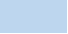
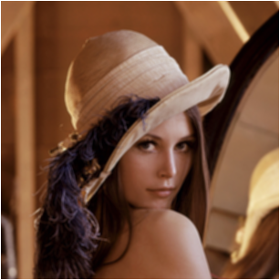
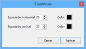

Séptima opción del menú superior. A continuación se muestra una imagen:

Ilustración 1. Menú efectos.
En esta sección se encuentran para aplicar efectos artísticos a imágenes. Muchos de estos efectos se crean a partir de otras funciones de Apolo. La imagen sobre la que se aplicarán será la mítica imagen de Lena.
Ilustración 2.Imagen original de Lena.

Con esta función se crear un efecto de distorsión o desenfoque de la imagen. Dentro del menú se puede seleccionar el nivel de desenfoque, desde no aplicar nada (0) hasta el máximo permitido (10).
Ilustración 3. Menú desenfocar - distorsión.
La forma de actuar de la función es muy sencilla, para calcular el valor del píxel actual (posición x=20, y=20) utiliza en nivel de distorsión proporcionado por el usuario (3), y asigna el nuevo valor seleccionando de forma aleatoria entre los vecinos de la posición actual, más en concreto entre la matriz dada por el valor proporcionado por el usuario.
Aplicando una distorsión de 8 puntos a la imagen de Lena se observa el resultado.
Ilustración 4. Lena distorsionada.
Al visualizar la imagen transformada se ve claramente cómo funciona la distorsión. Las esquinas son difusas y se crea un efecto de emborronado de la imagen.
Este tipo de desenfoque crea una especia de duplicidad de imágenes estando una de ellas movida. Dentro del menú se puede seleccionar el valor de desplazamiento vertical y horizontal que se quiere aplicar a la imagen.
Ilustración 5. Menú desenfocar - movimiento.
La función simplemente crea una copia de la imagen original y la desplaza el valor seleccionado por el usuario. En las zonas libres (zonas sin superposición) el valor de los píxeles es el mismo que el de la imagen original, y en las zonas no libres se suma el píxel original y el mismo píxel al que se ha sumado/restado el valor del desenfoque (las coordenadas) y se divide entre dos.
Ilustración 6. Lena desenfoque -movimiento.
La imagen anterior muestra a Lena tras un desenfoque vertical y horizontal de +10. El resultado es la imagen original a la que se le ha superpuesto la misma imagen movida 10 píxeles en X e Y.
Este tipo de desenfoque utiliza una máscara de convolución que suaviza los colores de la imagen. El proceso está explicado en la Manual de usuario>Referencia de funciones>Mascaras.
Si se aplica el efecto Blur sobre la imagen Lena, se obtienen los siguientes resultados.
Ilustración 7. Lena desenfoque (Blur).

A la imagen se le ha aplicado una máscara de paso bajo cuyos valores de la matriz son todo unos.
Al aplicar este efecto sobre una imagen se despliega un menú que permite seleccionar el valor del pixelado que oscila desde 1 a 20.
Ilustración 8. Menú pixelado.
Al aplicar el pixelado sobre una imagen lo que se está realizando es una media de los píxeles seleccionados (este número depende de valor seleccionado por el usuario) y aplicándolos a todos ellos. Por ejemplo, si selecciona como valor 3, se divide la imagen en cuadrados de 3x3 (9 píxeles en total) y se calcula la media de esos cuadrados. Una vez calculada la media, ésta se asigna a todos los píxeles del cuadrado correspondiente.
Aplicando un pixelado de 12 a la imagen de Lena, se obtiene el siguiente resultado.
Ilustración 9. Lena pixelada.
Cada cuadrado de la imagen tiene el mismo valor en sus canales RGB. Este valor ha sido calculado previamente con los valores originales de la imagen.
Aplicando esta función a una imagen, se crea una malla regular del ancho/alto y color seleccionado.
Ilustración 10. Menú cuadrícula.

Como se observa en la imagen anterior, el espaciado horizontal se puede seleccionar en dos controles numéricos. Para seleccionar el color se debe pulsa en los botones los cuales desplegarán el menú clásico de Windows para seleccionar un color predefinido o personalizado.
Ilustración 11. Lena cuadrícula.
A Lena se le ha aplicado una malla con 20 píxeles de ancho y alto entre línea y línea, y color negro tanto para las líneas horizontales como a las verticales.
Este efecto crea una imagen espejo en la parte inferior de la imagen original, pudiendo estar ésta atenuada. Desde el menú se puede seleccionar el tamaño de la sombra y si quiere atenuarse.
Ilustración 12. Menú sombra de vidrio.
El proceso para crear la sombra contiene varios pasos. El primero es recortar desde abajo el tamaño seleccionado por el usuario a partir de la imagen original. Esa parte se rota 180º y pega en la parte inferior de la imagen original, creando así una especie de espejo. Adicionalmente, si se selecciona la casilla Atenuar sombra, a la parte que se ha pegado se le disminuye el canal alfa de forma progresiva.
Para apreciar bien el efecto se ha utilizado otra imagen distinta de Lena. La imagen original se muestra a continuación.
Ilustración 13. Imagen botella.
Tras aplicar a la anterior imagen una sombra de 100 píxeles y con atenuación de sombra, el resultado es el siguiente.
Ilustración 14. Botella sombra de vidrio.

En la imagen anterior se ve claramente el proceso, primeramente se recorta la imagen desde abajo y se coloca en la parte inferior una vez rotada 180º. Para finalizar se recorre la sombra disminuyendo progresivamente el valor alfa.
Esta función divide la imagen en el número de bloques seleccionado y los desordena. Tomando como ejemplo las seis partes, la función a partir de la imagen original obtiene seis partes dividiéndola tres veces en vertical y una en horizontal. Una vez obtenidas las seis partes, intercambia posiciones entre ellas para obtener el efecto.
Ilustración 15. Lena seis partes.
En la ilustración anterior se puede ver a la imagen de Lena después de aplicar la función trocear imagen, en concreto la opción de seis partes.
Esta función calcula el nuevo valor de colores de forma aleatoria. El grado de aleatoriedad se calcula en función del valor seleccionado por el usuario en el menú.
Ilustración 16. Menú ruido aleatorio.
Aplicando un grado de aleatoriedad de 3 a la imagen Lena, se obtiene el siguiente resultado.
Ilustración 17. Lena con ruido aleatorio.
Como se puede observar el ruido aplicado no tiene un patrón fijo, sino que se calcula de forma aleatorio (pseudoaleatoria) para cada canal RGB de cada píxel.
Esta función es similar al ruido aleatorio a diferencia de que el grado de aleatoriedad se calcula en función del valor evaluado.
Ilustración 18. Menú Ruido desplazado.
Más en concreto, al aplicar este efecto sobre una imagen (ruido 100), para cada píxel se obtiene su valor y se le suma o resta un valor aleatorio entre el valor actual más/menos el valor seleccionado (100). Opcionalmente se puede marcar Ruido en blanco y negro y el valor generado aleatoriamente será el mismo en los tres canales RGB.
En la ilustración anterior se ha aplicado a la imagen Lena un ruido de 100 puntos y seleccionando la opción Ruido en blanco y negro.
Ilustración 19. Lena ruido desplazado en blanco y negro.
Tras aplicar este efecto se observa que a la imagen se le ha añadido una especie de neblina en tonos grises.
Crea un efecto artístico que simula una pintura al óleo. Este efecto permite ser modificado por dos parámetros, el nivel de contornos y la reducción de colores.
Ilustración 20. Menú óleo.
El efecto se basa en, a partir de la imagen seleccionada crea dos, una en la que se ha aplicado la función Detectar contornos (explicada en Manual de usuario>Referencia de funciones>Operaciones básicas personalizadas>Detectar contornos) y otra en la que se utiliza la función Reducir colores (explicada en Manual de usuario>Referencia de funciones>Operaciones básicas personalizadas>Reducir colores). La primera imagen (detectar contornos) es una imagen que contiene exclusivamente valores negros y blancos y se recorre en busca de píxeles no negros (blancos). Una vez ha encontrado un píxel blanco, busca en la imagen con colores reducidos las coordenadas de ese píxel y a la imagen de salida le asigna el valor del píxel de esta imagen (colores reducidos). En caso de ser negro lo pinta de color negro.
Ilustración 21. Lena óleo.
Como puede observarse tras aplicar a Lena un óleo (contornos = 16, colores = 160), se ve claramente que la imagen resultante es la imagen con colores reducidos a la que se le ha superpuesto la parte de color negro (contornos) de la imagen Lena original después de aplicar la detección de contornos.
En este apartado, los efectos se crean a partir de operaciones aritméticas o lógicas entre dos imágenes (véase la sección Manual de usuario>Referencia de funciones>Operaciones con dos imágenes).
El efecto se crea restando la imagen original menos la imagen original a la que se le ha aplicado una máscara. En concreto una máscara en escala de grises denominada repujado.
Los resultados aplicándolos sobre la imagen de Lena son los siguientes.
Ilustración 22. Lena efecto Marte.
El resultado es Lena en tonos rojizos.
El efecto se crea sumando la imagen original más la imagen original a la que se le ha aplicado una máscara. En concreto una máscara en escala de grises denominada repujado.
Los resultados aplicándolos sobre la imagen de Lena son los siguientes.
Ilustración 23. Lena efecto antiguo sobreexpuesto.
La imagen ha pasado a tener valores mucho más altos en sus tres canales RGB y da la sensación de estar sobreexpuesto.
El efecto se crea restando la imagen original a la que se le ha aplicado una máscara menos la imagen original. En concreto una máscara en escala de grises denominada repujado Los resultados aplicándolos sobre la imagen de Lena son los siguientes.
Los resultados aplicándolos sobre la imagen de Lena son los siguientes.
Ilustración 24. Lena efecto marino.
La imagen de Lena ha pasado a tener tonos azulados.
El efecto se crea mediante dos operaciones aritméticas. Primeramente se aplica a la imagen original dos máscaras en escala de grises. En concreto una máscara denominada Prewitt tanto en su opción horizontal como vertical. Estas dos imágenes se unen. El último paso es restar la imagen original menos la resultante del proceso anterior. Los resultados aplicándolos sobre la imagen de Lena son los siguientes.
Ilustración 25. Lena efecto aumentar rasgos.
Como puede observarse las zonas oscuras han aumentado. Puede notarse con mayor intensidad en la zona de las cejas, ojos y pelo. Se observa que el perfil ha aumentado.
El efecto se crea mediante dos operaciones aritméticas. Primeramente se aplica a la imagen original dos máscaras en escala de grises. En concreto una máscara denominada Prewitt tanto en su opción horizontal como vertical. Estas dos imágenes se unen. El último paso es sumar la imagen original más la resultante del proceso anterior. Los resultados aplicándolos sobre la imagen de Lena son los siguientes.
Ilustración 26. Lena con efecto disminuir rasgos.
Como puede observarse las zonas oscuras han disminuido. Puede notarse con mayor intensidad en la zona de las cejas.
Hay dos efectos disponibles, uno denominado contenido y otro desmedido.
El efecto sombreado contenido se crea restando la imagen original menos la imagen original a la que se le ha aplicado una máscara. En concreto una máscara en los canales RGB denominada repujado.
Los resultados aplicándolos sobre la imagen de Lena son los siguientes.
Ilustración 27. Lena sombreado contornos contenido.
El efecto sombreado desmedido se crea restando la imagen original a la que se le ha aplicado una máscara menos la imagen origina. En concreto una máscara en los canales RGB denominada repujado.
Los resultados aplicándolos sobre la imagen de Lena son los siguientes.
Ilustración 28. Lena sombreado desmedido.
Como puede observarse, en la segunda ilustración los contornos son más abruptos.
El efecto se crea mediante dos operaciones aritméticas. Primeramente se transforma la imagen original a escala de grises, y se resta la imagen original menos la transformada a escala de grises El último paso es sumar la imagen original más la resultante del proceso anterior. Los resultados aplicándolos sobre la imagen de Lena son los siguientes.
Ilustración 29. Lena con efecto aumentar luz.
La imagen de Lena al transformarse se torna a tonos más cálidos, con un efecto de mayor luz.
En la sección de efectos, se incluyen una serie de marcos para envolver a imágenes. En concreto están disponibles 4 marcos individuales y uno denominado marco de cine, en el que se pueden incluir 6 fotografías. A continuación se muestra el menú de este último marco citado.
Ilustración 30. Menú marco de cine.
Como puede observarse, se puede seleccionar el tamaño del marco y para abrir las diferentes imágenes, basta con pulsar encima de alguna y se abre un cuadro de diálogo para abrir una imagen. El resultado del marco, se muestra a continuación.
Ilustración 31. Lena marco de cine.
Además de este marco, como ya se citaba, existen 4 marcos más, en la siguiente imagen se observa uno de ellos.
Ilustración 32. Lena marco ondulado.
Created with the Personal Edition of HelpNDoc: Generate EPub eBooks with ease